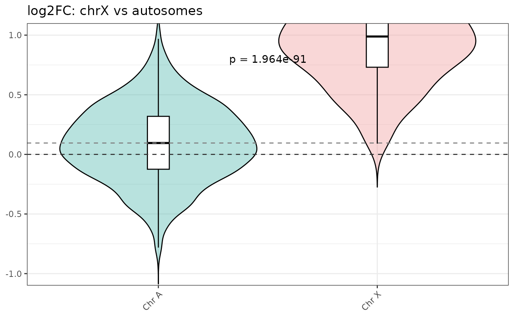

A synthetic dataset of 2000 ChIP-seq peaks designed to mimic the output of
DiffBind::dba.report(dba, th = 1, bCounts = TRUE) for a C. elegans
dosage compensation experiment.
Peaks on chrX are simulated to have higher fold change under the degron condition, reflecting dosage compensation loss when the relevant factor is degraded.
Format
A data.frame with 2000 rows and 11 columns:
- seqnames
Character. Chromosome name (
chrI-chrV,chrX).- start
Integer. Peak start position (bp).
- end
Integer. Peak end position (bp).
- width
Integer. Peak width in bp (always 501).
- strand
Character. Always
"*"(unstranded ChIP-seq).- Conc
Numeric. Average normalized binding count across conditions.
- Conc_degron
Numeric. Normalized counts for the degron condition.
- Conc_notag
Numeric. Normalized counts for the no-tag baseline.
- Fold
Numeric. log2 fold change (degron / notag).
- p.value
Numeric. Raw p-value from DiffBind.
- FDR
Numeric. Benjamini-Hochberg adjusted p-value.
Source
Generated synthetically via data-raw/example_peaks.R.
Proportions and effect sizes are based on a real C. elegans
dosage compensation ChIP-seq experiment.
Examples
data(example_peaks)
head(example_peaks)
#> seqnames start end width strand Conc Conc_degron Conc_notag Fold
#> 1 chrIII 13387688 13388188 501 * 6.9994 6.9690 7.0298 -0.1354
#> 2 chrII 5347141 5347641 501 * 8.6492 8.9199 8.3784 0.5320
#> 3 chrIV 4411828 4412328 501 * 7.3995 7.5176 7.2815 0.4550
#> 4 chrI 8998351 8998851 501 * 8.1467 8.1683 8.1250 0.1262
#> 5 chrIII 10718491 10718991 501 * 9.5817 9.5901 9.5732 -0.2132
#> 6 chrI 22078 22578 501 * 8.1004 8.4593 7.7414 0.7737
#> p.value FDR
#> 1 0.258400 0.7771
#> 2 0.006839 0.2608
#> 3 0.314800 0.8364
#> 4 0.692100 0.9568
#> 5 0.845600 0.9770
#> 6 0.948800 0.9954
table(example_peaks$seqnames)
#>
#> chrI chrII chrIII chrIV chrV chrX
#> 353 347 315 360 407 218
# Quick violin plot
violin_log2FC(
object = example_peaks,
title = "log2FC: chrX vs autosomes"
)
